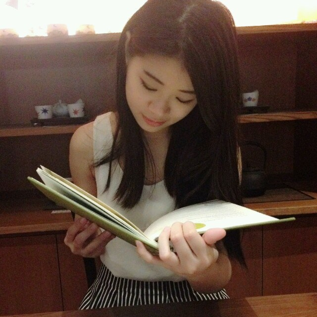
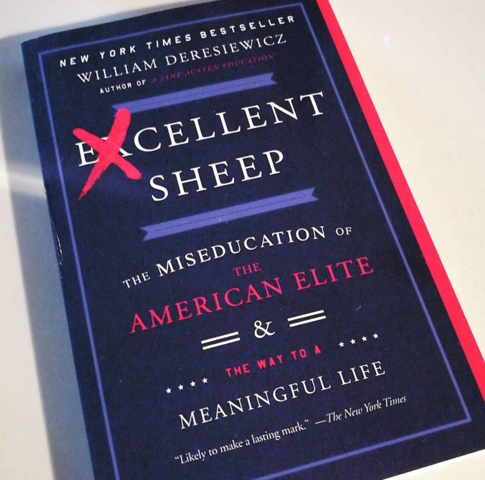
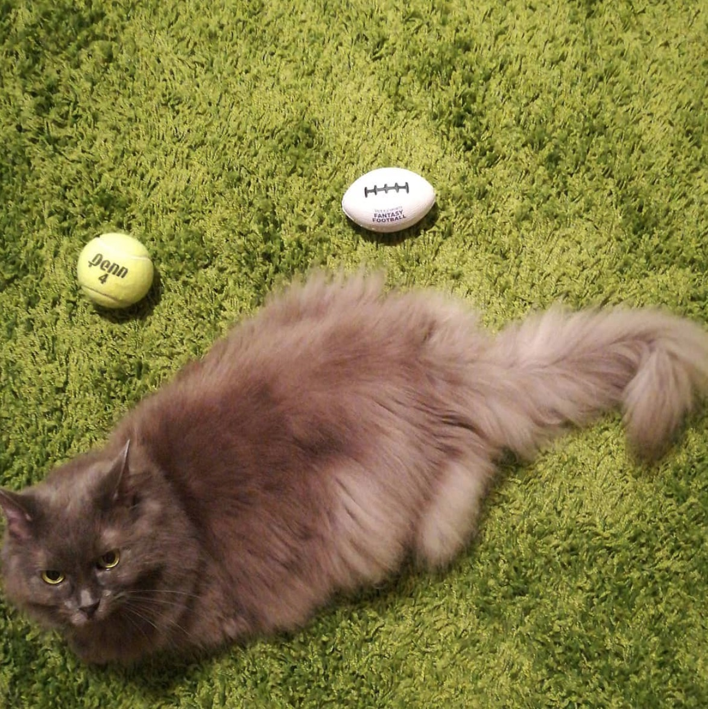
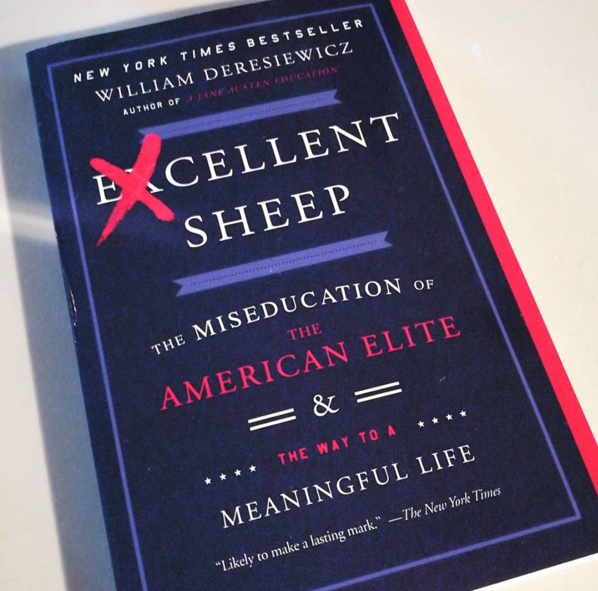
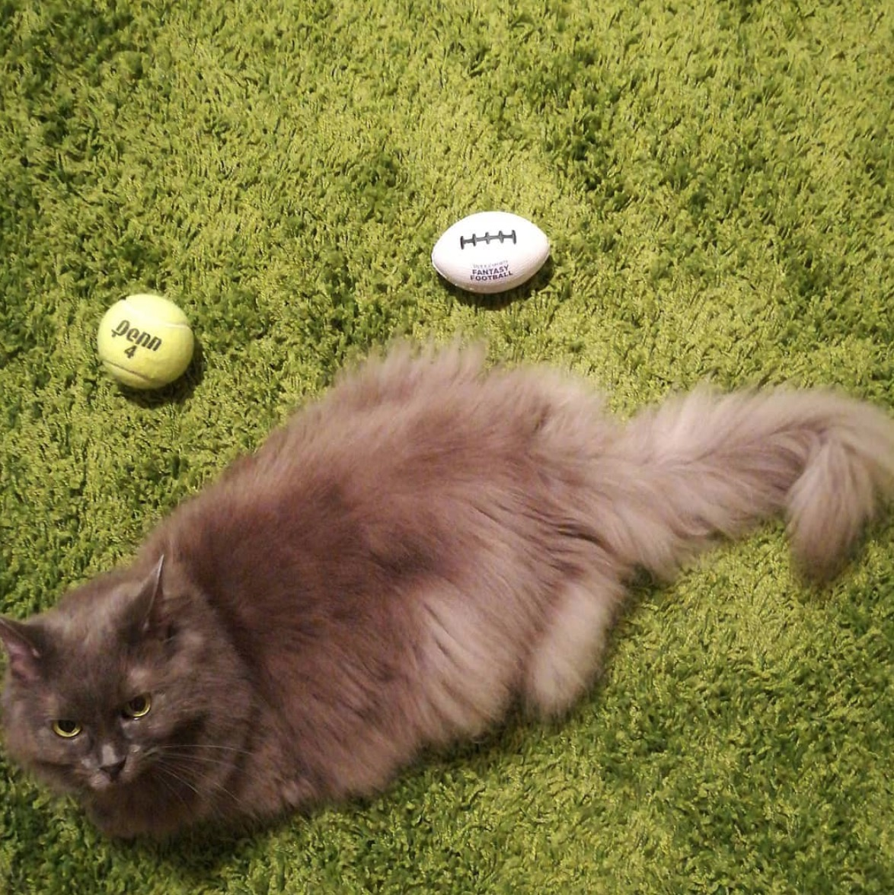

Hi there! I'm Blair!
I came to the states to pursue Human-Computer Interaction (UX Design & Research) after completing my M.A. in Communication & Technology Studies in Taiwan. My background in literature, humanities, and social science allows me to solve problems through translating research data into empathetic and logical design solutions. My lifetime goal is to narrow the gap among genders, classes, and ethnicities via design. During my free time you can find me dancing, consuming some nerdy content online, and training my cat to do dog tricks.
Things I Enjoy:


 


